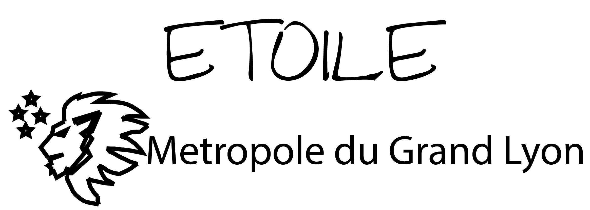

Accueil

ETOILE : Qu'est-ce que c'est ?
ETOILE est l'Emploi du Temps Organisé et Intelligent conçu pour Lyon et ses écoles. Il s'agit d'une
interface rendant la génération d'emploi du temps intuitive et agréable.
Comment utiliser ETOILE ?
Importez un fichier de configuration via le menu de gauche, ou utilisez les onglets pour entrer la configuration de votre établissement. Les trois onglets vous permettent de configurer :
- Accueil : permet de générer un emploi du temps et d'importer/exporter des fichiers de configuration
- Établissement : permet de définir les horaires des cours et les salles disponibles
- Élèves et enseignements : permet de définir les classes, les cours qu'elles suivent et la répartition horaire des cours
- Professeurs : permet d'associer un professeur à des cours